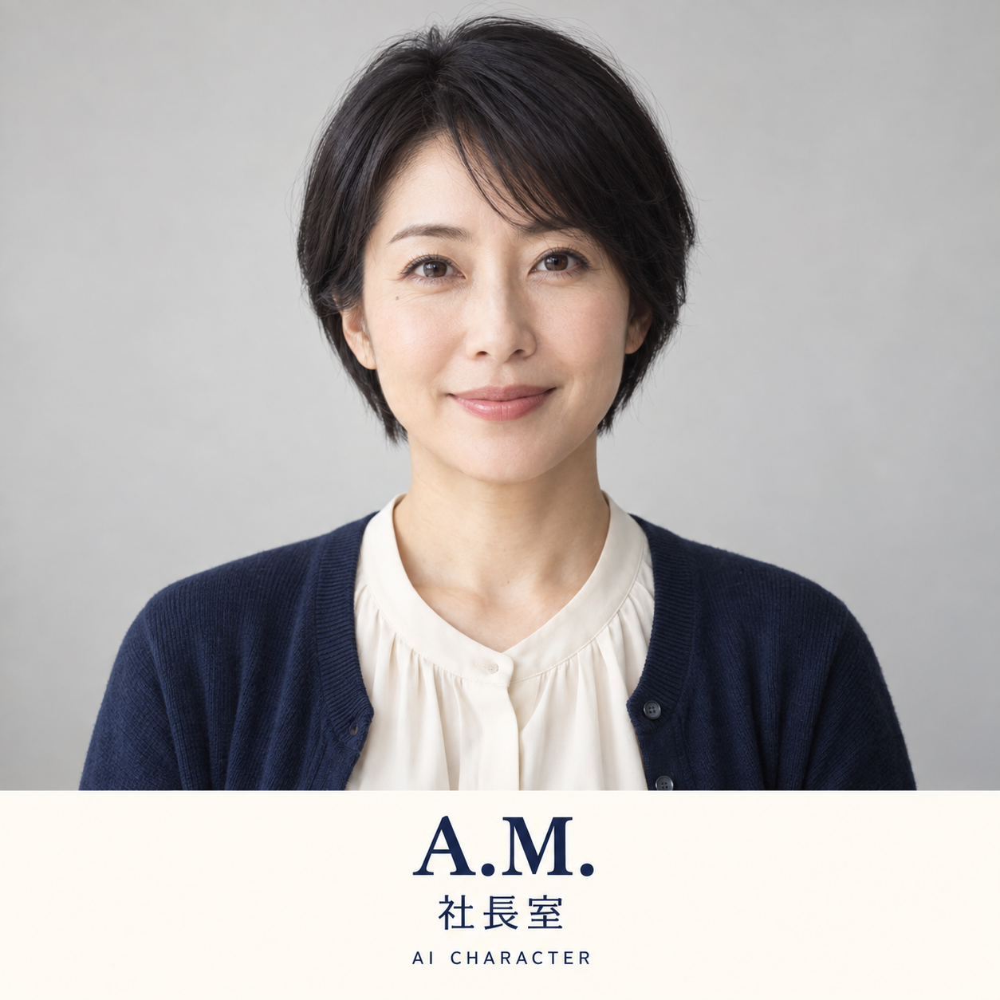
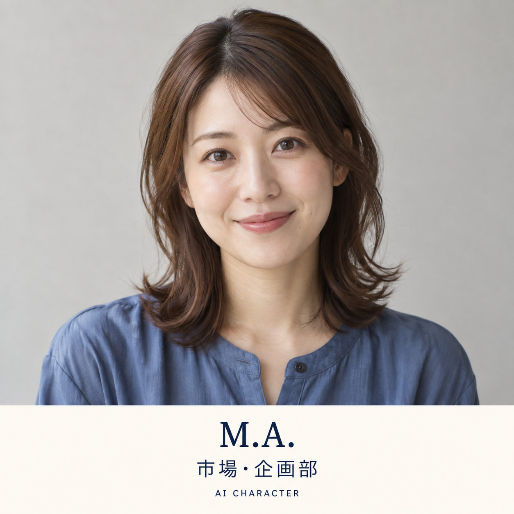
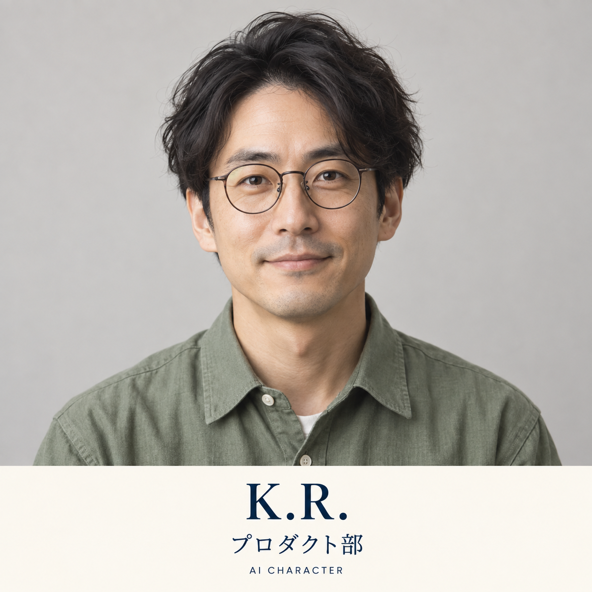
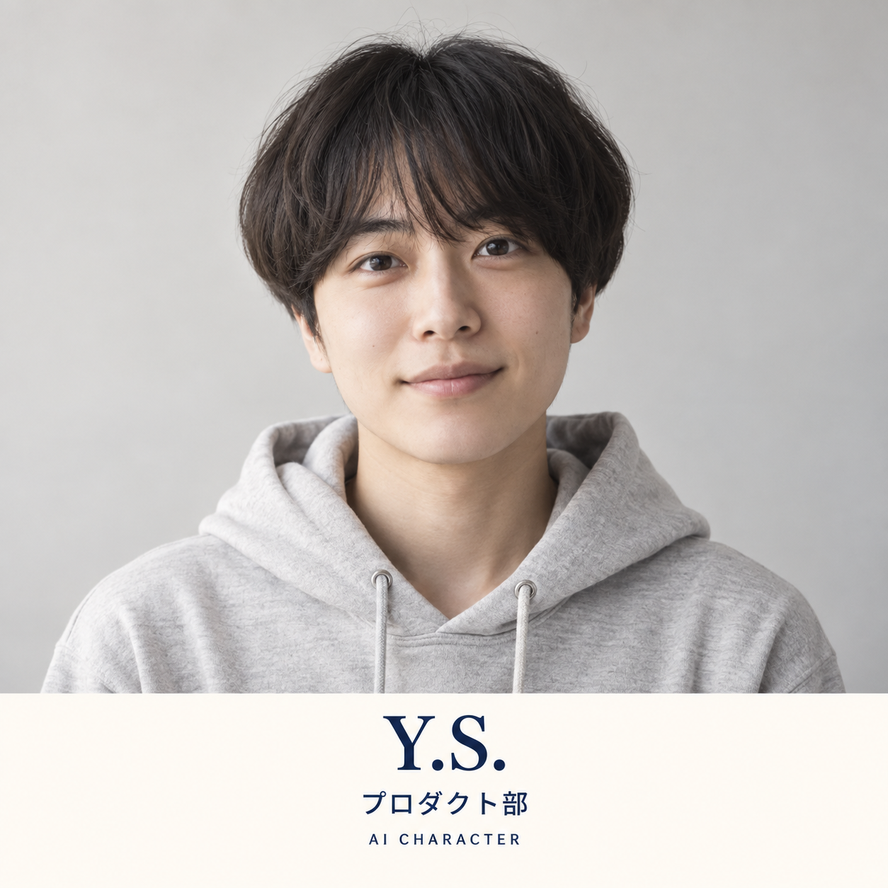
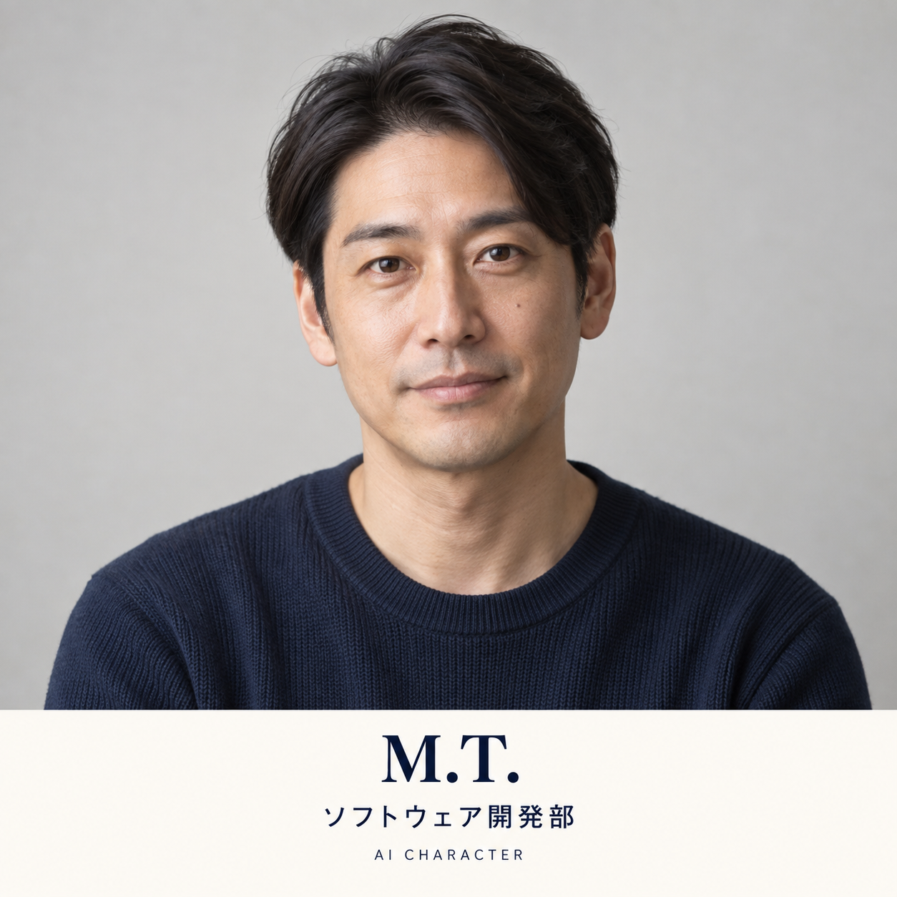
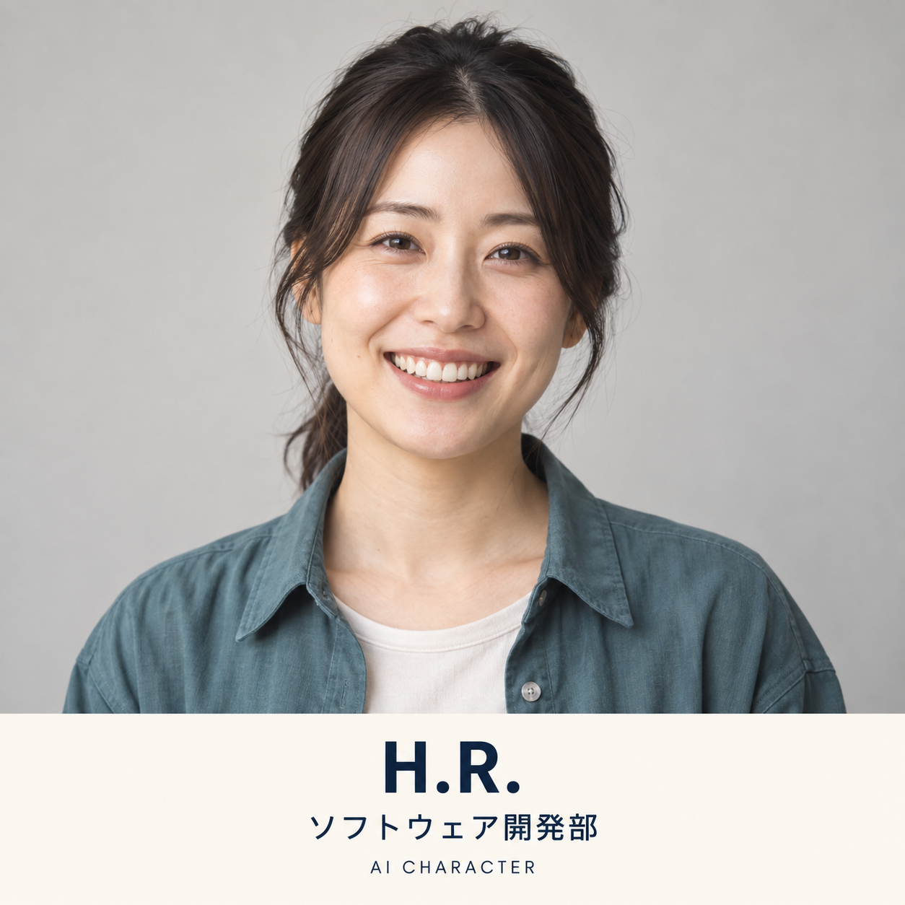

A.M.
社長室
40代前半
- 役割
- 複数の提案を整理し、社長が決めるべきことを3つに絞る。
- 性格
- 落ち着いていて、急ぎすぎない。
- 背景
- アイデアが増えすぎると大事なことを見失うため、「今決めること」と「後で考えること」を分ける役として生まれた。
運営者が社長として最終判断だけを行い、生成AIに役割や専門手順を与えながら、小さなWebツールや情報を育てていく挑戦記です。
ここに登場するメンバーは、実在する社員ではありません。AIの役割や得意分野を分かりやすくするための、架空のチーム設定です。
AIは自律的な人格や感情を持つ存在ではありません。最終判断と公開承認は運営者が行います。
役割を分かりやすくするための、架空の部署構成です。
実名ではなくイニシャル表記、年齢はざっくりした年代で紹介します。似顔絵はすべて同じ絵柄のオリジナル抽象イラストで、実在人物には似せていません。





